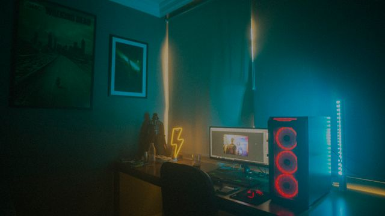

9:41
综合
视频
番剧
UP主
直播
专栏
热搜榜
1
夏日版本前瞻 PV 全解析热
2
零基础学前端，先学这 3 件事新
3
十块钱能做出什么菜？挑战最小预算热
4
4K 显卡选购避坑指南，这几款别买
5
一个人徒步天山的第 30 天
6
猫主子今日战绩：又拆了一个纸箱
7
民谣指弹入门：三个和弦弹遍天下
8
凌晨四点的城市，比白天更真实
搜索历史
清空
4K 显卡推荐
零基础学前端
家常菜谱大全
猫咪日常
徒步天山的第30天
暂无搜索历史，去下面挑一个感兴趣的方向吧
搜索发现
大家都在搜编程教程
4K 壁纸
显卡评测
家常菜谱
猫咪合集
民谣吉他
徒步旅行
城市夜景
猜你想看
查看更多
18:24
JS 闭包到底是个什么鬼？五分钟讲明白
12:05
米其林主厨的十分钟快手早餐
03:58
猫咪第一次见到行李箱的反应
26:41
民谣小酒馆现场版，全场一起唱
31:12
天山的雪有多厚？零下 20 度的清晨
07:33
赛博朋克城市漫游：霓虹下的雨夜

15:20桌面美学改造：一平米电竞角全记录
05:46
给猫买衣服的正确打开方式
已经到底啦，换个关键词试试吧